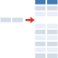

英国で 18 歳以下の全ての子供の情報をデータベース化 20
ストーリー by reo
SPOF 部門より
SPOF 部門より
ある Anonymous Coward 曰く、
英国で 18 歳以下の全ての未成年の情報が保管されているデータベースが運用開始されたとのこと (BBC News の記事、本家 /. 記事より) 。
2.24 億ポンドかけて構築されたこのシステムには 18 歳以下の青少年や児童 1100 万人のデータが保存されている。現在は英北西部のチャイルドケア専門家を対象としてサービスを提供しているが、段階的に児童保育などに携わる全国のチャイルドケア専門家らがアクセスできるようになる。
このデータベースは子供たちがより連携したサービスを受けることと、ケアの網から漏れる子供たちを無くすことを目的として作られたという。また、専門家らの時間節約にも役立てることができ、子供たちにかける時間を増やすことが可能になる。
データベースには氏名や生年月日、性別や保護者の連絡先、受けているケアサービスに関する情報などが含まれている。また、情報がアクセスされることによって不利益が生じる恐れのある子供 51,000 人に関してはデータが保護されるとのことだ。最終的には合計 39 万人の専門家がアクセスするようになるというが、彼らはセキュリティに関する厳しいトレーニングを受けることになっているそうだ。
チャイルドケア専門家ってどんな人？ (スコア:2)
１．データベースの内容だけで何かができる人？
２．チャイルドケア専門家資格試験に合格した人？
いずれにしても３９万人もの専門家がいること自体が驚きだ。
日本とは、法制度が決定的に違う、という事を強く感じる。